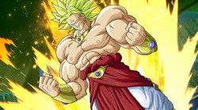
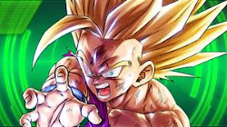
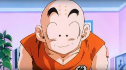
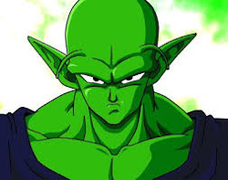
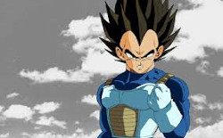

Cuando Toriyama decidió crear Dragon Ball, utilizó la obra Viaje al Oeste de Wu Cheng'en como inspiración para su propia serie, y tomó a Sun Wukong, el protagonista de la historia, como base para crear a su protagonista. Como una forma de que los lectores se identificaran más fácilmente con él, Toriyama cambió la apariencia del personaje, quien pasó de ser un mono a un niño con cola de mono. Sin embargo, Toriyama mantuvo otros aspectos característicos del personaje de la novela, como su báculo (bastón mágico) y su nube voladora.
De la misma forma, su llegada a la Tierra en una nave con forma esférica es una referencia a la obra original, donde el protagonista nace de un huevo de piedra que cayó del cielo. Aunque Gokū es extraterrestre, en un inicio estaba planeado que fuera humano, pero al aparecer peleadores de otros planetas se estableció como un saiyajin. Para hacer que la historia avanzara más rápido, el manga le dio a Gokū la habilidad de teletransportarse ("Shunkan Idō") para así poder mover a la acción a otro sitio en segundos.
Toriyama explica que Gokū fue creado basándose en los ropajes utilizados por los monjes Shaolin de China, ya que le quería dar una estética con tendencia china a Dragon Ball. En las etapas iniciales del manga algunos lectores comentaron que Gokū era muy simple, así que el autor cambió un poco su apariencia y agregó a los personajes Kame Sen'nin y Krilin, y el torneo llamado Tenkaichi Budōkai para darle al manga un estilo más de pelea. Como se comentaba que Gokū iba a ganar el torneo, Toriyama hizo que perdiera dos, aunque él también quería que Gokū ganara.
En Latinoamérica, originalmente —y por poco tiempo— la serie animada se conoció con el nombre Zero y el dragón mágico. El primer doblaje se basaba en la versión en inglés hecha por Harmony Gold, quienes hicieron la primera tentativa de traer las obras de Toriyama a América, por ello el primer nombre con que se conoció a Gokū fue Zero. Posteriormente, tras algunos episodios y luego de la intervención de Toei, se decidió reiniciar la serie con un nuevo doblaje de manos de la empresa mexicana Intertrack que, entre otras cosas, respetó los nombres originales.
Creado por Akira Toriyama, se encuentra basado en uno de sus personajes anteriores, Tanto, protagonista de Dragon Boy, en esa historia, la característica física fuera de lo común en tanto, eran sus alas. Cuando Toriyama se decidió a crear Dragon Ball, usó la obra Viaje al Oeste de Wu Cheng'en como inspiración para su propia serie, y tomó al protagonista de la historia para crear a su protagonista. Para que fuera más identificable con los lectores, Toriyama cambió la apariencia del personaje de un mono a un humano con cola de mono, además pensó que cuando Goku se estuviera escondiendo, su cola sería visible y los lectores no lo perderían.
Aunque Goku es de raza alienígena, en un inicio estaba planeado que fuera humano, pero al aparecer peleadores de otros planetas se estableció como un Saiyan. Para hacer que la historia avanzara más rápido, el manga le dio a Goku la habilidad de tele-transportarse, para así poder mover a la acción a otro sitio en segundos. Akira Toriyama explica que Goku fue creado basándose en los ropajes utilizados por los monjes Shaolin de China, ya que le quería dar un aire chino a Dragon Ball.
En las etapas iniciales del manga, algunos lectores comentaron que Goku era muy simple, así que el autor cambió un poco su apariencia y agregó a algunos personajes como Kame Sen'nin y Kurilín; y creó el Torneo Mundial de las Artes Marciales para darle al manga un estilo más de pelea. Como se comentaba que Goku iba a ganar el torneo, Toriyama hizo que perdiera dos, aunque él también quería que ganara.
Mide 1,75 m y pesa unos 62 kg de adulto[60], tiene el cabello de color negro con puntas y un brillo gris, este consiste en tres mechones colgando a la derecha de su frente y dos colgando a la izquierda, su cabello también se levanta en la frente con cuatro picos y tres mechones por detrás (más adelante en el anime, gana cinco picos en la frente y cuatro mechones por detrás). Esta forma capilar permanece sin alteración a lo largo de toda la serie en su estado base, únicamente cambiando cuando se transforma o en un caso excepcional como en el episodio 69 de Dragon Ball Super cuando Goku utilizó un esmoquin de guardaespaldas en conjunto con gel para mantener su cabello fijo, pero este volvió a su forma normal luego de unos minutos.
Goku Joven Flashback Son Goku en su niñez.
La forma más común de verlo vestido es luciendo su tradicional Gi de artes marciales, la cual varía de color rojo-naranja a naranja cálido, el cual tiene a juego una camiseta de mangas cortas de color azul marino. Solía llevar una cinta Obi de color azul, cambiada posteriormente a una faja del mismo color. Al inicio, Gi tiene el kanji de la Escuela Tortuga; también ha utilizado un Gi sin nada visible; y el primer kanji de su nombre "Go". A juego con su indumentaria, Goku luce muñequeras de color azul, zapatos chinos de artes marciales (de niño) y botas de color azul marino con bordes de color amarillo o rojo y lazos color beige; durante su entrenamiento con Kami llevó un atuendo azul claro con el cabello enrollado en una tela blanca que cambia mas tarde por su Gi. En el principio de Dragon Ball, Goku se presenta por primera vez llevando un Gi azul con pulseras rojas, un obi blanco atado en un arco sobre su cintura con zapatos azules oscuros de kung fu.
Como un niño, él también utiliza el Báculo Mágico y tiene una cola debido a su origen Saiyan. Comenzando el 21º Torneo Mundial de Artes Marciales y para la mayoría de Dragon Ball, Goku usa el Gi básico de la escuela tortuga como su principal atuendo hasta después de su entrenamiento con Kami y Mr. Popo. En el Torneo Mundial de las artes marciales 23º y por el resto de Dragon Ball, Goku es despojado de su cola permanentemente por Kami (a través de métodos desconocidos) y lleva una actualización de su Gi que cuenta con la misma camiseta corta y botas que se convierten en parte de su traje característico a lo largo de Dragon Ball Z.
A pesar de ser un Saiyan, Goku nunca ha preferido usar la misma armadura que sus predecesores, que normalmente llevaron mientras servían como ejército del Imperio de Freezer, debido a su devoción por la Tierra. El único momento notable en el que usó una Armadura de combate fue durante su entrenamiento con Gohan dentro del Salón del Espíritu y Tiempo. Este conjunto de armadura era idéntico al que Vegeta usaba en ese momento. Tan pronto como terminó su entrenamiento, Goku cambió de nuevo a su ropa regular, alegando que quería luchar como todo un Terrícola.
Como Saiyan, poseía ciertas características que le hacían ser muy diferente de los demás seres humanos: tenía una cola de mono que le permitía transformarse en Mono gigante, un mono con un poder destructor inmenso, la cual le fue arrancada numerosas veces por varios personajes, entre ellos Kami para evitar que se transformase; los Saiyan poseen una particularidad en el cabello y es que siempre es de un color oscuro y después de unos años deja de crecer y se mantiene así para toda la vida; también tienen la característica de que cada vez que tienen un combate extremo, vuelven con más fuerza de la que tenían, así es como entrenan los Saiyan muy duro para incrementar su Ki.
En el inicio, Goku aparece como un joven artista marcial con cola y fuerza sobrehumana. 5 años más adelante en la historia, se revela que es un extraterrestre de la clase baja de la raza Saiyan, y que su verdadero nombre es Kacarrot (nombre original puesto en su planeta natal).
|  |
 |
 |
 |
 |